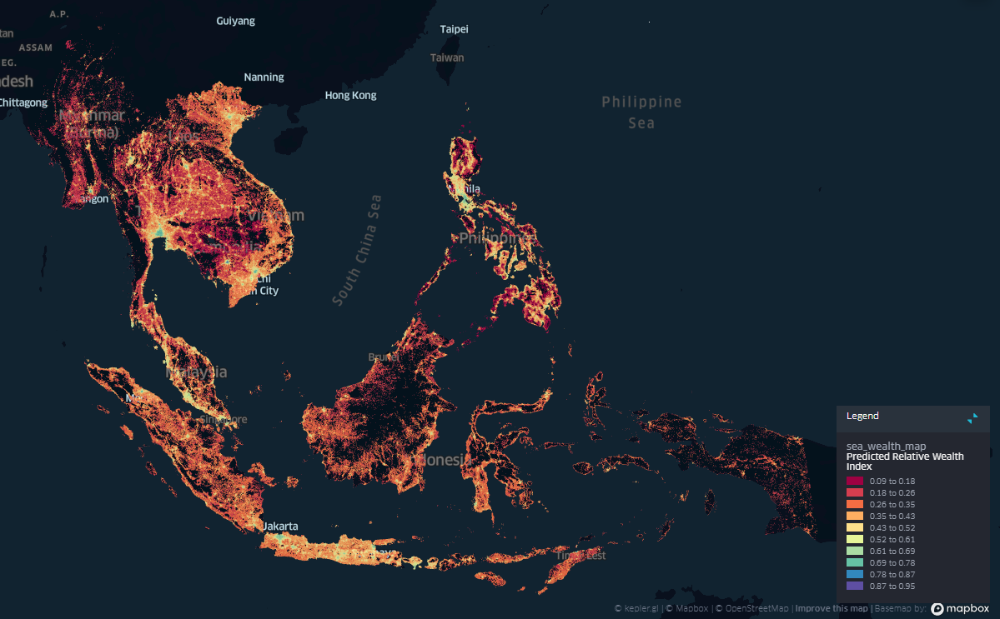

UNICEF AI4D Poverty Mapping
Funded by UNICEF as part of the AI Research Bank for Development (AI4D) program, this project explored the use of purely open datasets and low-cost Machine Learning models for poverty mapping estimation across 9 Southeast Asian countries:
- Cambodia
- Myanmar
- Philippines
- Timor-Leste
- Indonesia
- Laos
- Malaysia
- Thailand
- Vietnam
We hope that our work can serve as a baseline for other Data Scientists to further AI x Development research in the region.
Quick links
- Web Map Demo of our wealth estimates.
- GitHub Repo containing all code needed to replicate model training and rollout for all 9 SEA countries
- Google Drive Folder that contains all output data and intermediate artifacts (e.g. training datasets, models)
- Note: These will be hosted on the AI for Development (AI4D) Research Bank, which is still a work-in-progress.
Replicating our work
If you want to replicate the final models and wealth estimates, go to the ff. notebook folders:
These provide the code necessary to replicate our work end-to-end. The earlier notebooks are more experimental as we were developing the methodology. Note that to run them properly, you need to get DHS data yourself and set-up your local environment. Just follow the instructions in our repo’s README.
Summary of Findings
This sections contains a brief summary of our overall main findings. The other pages in this site contain documentation for each of our sprints, reporting on our progress as they happened.
DHS Countries: Cambodia, Myanmar, Philippines, Timor-Leste
Training models and using them to produce wealth estimates for countries with DHS survey data are relatively straightforward. We generate features to characterize the neighborhood of the DHS clusters, which we then use to train a model.
The table below shows R^2 values after Repeated 5-fold Cross Validation (5 Repeats; 25 runs in total).
| Country | # Samples | Repeated 5-fold CV |
|---|---|---|
| Cambodia | 611 | 0.70 (±0.06) |
| Myanmar | 441 | 0.50 (±0.09) |
| Philippines | 1,213 | 0.57 (±0.03) |
| Timor-Leste | 455 | 0.60 (±0.07) |
| Average | 0.59 |
Non-DHS Countries: Indonesia, Laos, Malaysia, Thailand, Vietnam
For countries with no usable DHS data for training (either data doesn’t exist, no lat/lon coordinates, or data is too old), it wasn’t as straightforward to train models for these.
The main challenges were:
How can we utilize data from the 4 DHS countries to train a model that we can use for these 5 non-DHS countries?
The first idea might be to simply combine all the data from each country into one big dataset.
The problem here is that both the target variable (the wealth index) and the feature values are not directly comparable between countries:
- Wealth Index
- DHS-calculated relative wealth score based on asset ownership
- The first principal component after running PCA on asset-related columns/values (e.g. # of cars, # of rooms, etc). In effect, this is a single score that summarizes the other columns and represents the “asset wealth” of a household.
- The PCA procedure to calculate this is based on different asset-related columns/values for different countries.
- Features
- Features may be interpreted differently from country to country.
- For example, 5mbps internet speed might be considered slow for Country A, while it might be considered fast for Country B .
- If we used raw values directly, the model might be confused because the mapping of features to relative wealth is different. That is, 5mbps might be correlated with relatively poorer households in Country A, while it might be correlated with relatively wealthier households in Country B.
We found that a simple solution was to normalize the features and the wealth index through a MinMaxScaler. The table below shows results that support this hypothesis. To validate this methodology, we performed leave-one-country-out cross-validation wherein we utilize one country as the test set and use the other 3 as the train set.
| Test Country | # Samples | Raw Features & Wealth Index | StandardScaler for Features & Wealth Index | MinMaxScaler for Features & Wealth Index |
|---|---|---|---|---|
| Cambodia | 611 | -0.19 | 0.48 | 0.53 |
| Myanmar | 441 | 0.62 | 0.58 | 0.49 |
| Philippines | 1,213 | 0.37 | 0.54 | 0.36 |
| Timor-Leste | 455 | 0.46 | 0.51 | 0.49 |
| Average | 0.32 | 0.52 | 0.47 |
Note that we tried other scalers and other methods like re-calculating the wealth indices, but the MinMaxScaler proved to be the best approach in the end. Read more about it in our Sprint 2 and Sprint 3 reports.
How do we validate if the produced wealth estimates for these 5 countries are sensible?
Our leave-one-country-out cross-validation procedure simulates the scenario of training on multiple countries and utilizing it on one that it hasn’t seen during training.
Our next step is to train a final model on all 4 countries’ data, and use it on the 5 non-DHS countries. However, how do we check if the results are actually sensible in the absence of ground truth?
- Qualitatively, we can see that the results intuitively match known wealthier areas in the countries (e.g. the capitals and major cities).

- Quantitatively, we calculate the agreement between province/city rankings according to our model estimates and some reference wealth-related data. These are not apple-to-apple comparisons since the wealth data are not exactly the same, but they should give us some level of confidence that our estimates aren’t in total disagreement with other government data.
| Country | Reference Data | Admin Level | N | Spearman Rank Correlation |
|---|---|---|---|---|
| Indonesia | SUSENAS-derived Relative Wealth Index | City / District | 514 | 0.72 |
| Laos | International Wealth Index | Province | 18 | 0.75 |
| Malaysia | Poverty Headcount | State | 16 | 0.78 |
| Average | 0.75 |